sunspots <- read.csv("data/sunspots_daily.csv", sep = ";", header = FALSE, stringsAsFactors = FALSE)Final Project - Data Visualization & Exploration
Space Weather
Introduction
Space weather refers to the dynamic and ever-changing conditions in space, primarily driven by the Sun’s activity. It includes phenomena such as solar flares, coronal mass ejections (CMEs), and variations in the solar wind, all of which can impact Earth’s magnetosphere, satellites, communication systems, and even power grids.
This project focuses on the Sun as the primary driver of space weather, with particular attention to sunspots and solar flares. Sunspots are cooler, magnetically active regions on the Sun’s surface that serve as indicators of solar activity. More importantly, solar flares—sudden and intense bursts of energy caused by the reconnection of magnetic fields—are among the most powerful events in our solar system. These flares release vast amounts of electromagnetic radiation and energetic particles, traveling at the speed of light and affecting space weather conditions almost instantly.
Flares are classified based on their X-ray energy output:
A, B, C-Class – Minor flares with minimal effects on Earth.
M-Class – Medium-sized flares that can cause brief radio blackouts.
X-Class – The most intense flares, capable of disrupting satellites, GPS, and power grids.
Similar to the Richter scale for earthquakes, each letter represents a ten-fold increase in energy output. So an X is 10 times an M and 100 times a C. Within each letter class, there is a finer scale from 1 to 9. But X flares are an exception and the finer scale can go up to infinity.
The data
The datasets used in this project come from:
Sunspot Data from SILSO (source)
- Daily Sunspot Count
NOAA GOES-R 18 Satellite Data (source)
XRS Flare Summary – Includes flare energy levels (XRSB flux, background flux, and integrated flux) and flare classifications.
XRS Flare Location – Provides the locations of solar flares on the Sun’s surface.
The NOAA data was provided in .nc (NetCDF) format, which required a more involved process to convert it into a usable dataframe. First, the relevant variables had to be extracted individually before being combined into a structured dataframe. In contrast, the sunspots dataset was already in CSV format, making it straightforward to load and work with.
Sunspots
The sunspot dataset begins in 1818, but for this analysis, we are focusing on data from 1970 to the present. This filtering is necessary because earlier records are less reliable due to inconsistencies in observational techniques and instrumentation. Additionally, selecting data from 1970 onward provides a sufficiently large timeframe to observe significant trends and make meaningful visualizations.
colnames(sunspots) <- c("Year", "Month", "Day", "Decimal_date", "Tot_sunspots", "Standard_deviation", "Num_of_observations", "def_prov_ind")
sunspots <- as_tibble(sunspots)
sunspots <- sunspots %>%
filter(Year >= 1970)
sunspots <- sunspots %>%
mutate(Date = as.Date(paste(Year, Month, Day, sep = "-"), format = "%Y-%m-%d"))NOAA Satellite Data
The NOAA Satellite Data available spans from late 2022 to december 2024.
#Flares
Flare_file_path <- "data/sci_xrsf-l2-flsum_g18_s20220905_e20241211_v2-2-0.nc"
#Flares location
Floc_file_path <-"data/sci_xrsf-l2-flloc_g18_s20220908_e20241211_v2-2-0.nc"
# Open the NetCDF files
Flare_nc_data <- nc_open(Flare_file_path)
Floc_nc_data <- nc_open(Floc_file_path)Flares dataset
# Extract the time variable
time <- ncvar_get(Flare_nc_data, "time")
# Convert time to Date format (using the provided base time in the file description)
# Base time is "2000-01-01 12:00:00 UTC"
base_time <- as.POSIXct("2000-01-01 12:00:00", tz = "UTC")
time_converted <- base_time + time
# Extract relevant variables
flare_id <- ncvar_get(Flare_nc_data, "flare_id")
xrsb_flux <- ncvar_get(Flare_nc_data, "xrsb_flux")
status <- ncvar_get(Flare_nc_data, "status")
background_flux <- ncvar_get(Flare_nc_data, "background_flux")
flare_class <- ncvar_get(Flare_nc_data, "flare_class")
integrated_flux <- ncvar_get(Flare_nc_data, "integrated_flux")
# Combine variables into a data frame
flare_data <- tibble(
Date = time_converted,
flare_id = flare_id,
xrsb_flux = xrsb_flux,
status = status,
background_flux = background_flux,
flare_class = flare_class,
integrated_flux = integrated_flux
)
# Filter out invalid data (-9999 as FillValue)
flare_data <- flare_data %>%
filter(
xrsb_flux != -9999,
integrated_flux != -9999,
background_flux != -9999,
xrsb_flux > 0
)
#create additional attributes that will be useful later
flare_data$flare_category <- sub("[0-9].*", "", flare_data$flare_class)
flare_data$flare_category <- factor(flare_data$flare_category, levels = c("X", "M", "C", "B", "A"))
# Extract level (numeric part, e.g., 1.1, 4.3)
flare_data$flare_level <- sub("[A-Za-z]", "", flare_data$flare_class)
flare_data$flare_level <- as.numeric(flare_data$flare_level)Flares location dataset
time <- ncvar_get(Floc_nc_data, "time")
# Convert time to Date format (using the provided base time in the file description)
# Base time is "2000-01-01 12:00:00 UTC"
base_time <- as.POSIXct("2000-01-01 12:00:00", tz = "UTC")
time_converted <- base_time + time
# Extract relevant variables
flare_id <- ncvar_get(Floc_nc_data, "flare_id")
flloc_hg <- ncvar_get(Floc_nc_data, "flloc_hg")
flloc_car <- ncvar_get(Floc_nc_data, "flloc_car")
flloc_rtheta <- ncvar_get(Floc_nc_data, "flloc_rtheta")
flloc_xy <- ncvar_get(Floc_nc_data, "flloc_xy")
solar_p_angle <- ncvar_get(Floc_nc_data, "solar_p_angle")
solar_radius <- ncvar_get(Floc_nc_data, "solar_radius")
#Extract lat and lon for hg, car, rtheta and xy coordinates
flloc_hg_lon <- flloc_hg[1, ] # Longitude values
flloc_hg_lat <- flloc_hg[2, ] # Latitude values
flloc_car_lon <- flloc_car[1, ] # Longitude values
flloc_car_lat <- flloc_car[2, ] # Latitude values
flloc_rtheta_lon <- flloc_rtheta[1, ] # Longitude values
flloc_rtheta_lat <- flloc_rtheta[2, ] # Latitude values
flloc_xy_lon <- flloc_xy[1, ] # Longitude values
flloc_xy_lat <- flloc_xy[2, ] # Latitude values
# Combine variables into a data frame
flare_loc_data <- tibble(
Date = time_converted,
flare_id = flare_id,
flloc_hg_lon = flloc_hg_lon,
flloc_hg_lat = flloc_hg_lat,
flloc_car_lon = flloc_car_lon,
flloc_car_lat = flloc_car_lat,
flloc_rtheta_lon = flloc_rtheta_lon,
flloc_rtheta_lat = flloc_rtheta_lat,
flloc_xy_lon = flloc_xy_lon,
flloc_xy_lat = flloc_xy_lat,
solar_p_angle = solar_p_angle,
solar_radius = solar_radius
)
# Filter out invalid data (-9999 as FillValue)
flare_loc_data <- flare_loc_data %>%
filter(
flloc_hg_lon != -9999,
flloc_hg_lat != -9999,
flloc_car_lon != -9999,
flloc_car_lat != -9999,
flloc_rtheta_lon != -9999,
flloc_rtheta_lon != -9999,
flloc_xy_lon != -9999,
flloc_xy_lat != -9999,
solar_p_angle != -9999,
solar_radius != -9999
)nc_close(Flare_nc_data)
nc_close(Floc_nc_data)Flares
flare_class_thresholds <- c(
A = 0,
B = 1e-7,
C = 1e-6,
M = 1e-5,
X = 1e-4,
X10 = 1e-3
)
# colors for each flare class
flare_colors <- c(
"A" = "gray",
"B" = "#f26386",
"C" = "#87CEFA",
"M" = "#a4d982",
"X" = "#d0b6fa",
"X10" = "#ad80f6"
)
# Create data frame for the bands
bands <- data.frame(
ymin = (c(0, 1e-7, 1e-6, 1e-5, 1e-4, 1e-3)), # Lower bounds of each class
ymax = (c(1e-7, 1e-6, 1e-5, 1e-4, 1e-3, Inf)), # Upper bounds of each class
class = c("A", "B", "C", "M", "X", "X10"), # Class labels
fill_color = flare_colors
)
options(repr.plot.width = 50, repr.plot.height = 6)
ggplot(flare_data, aes(x = Date, y = xrsb_flux)) +
geom_rect(
data = bands,
aes(xmin = min(flare_data$Date), xmax = max(flare_data$Date), ymin = ymin, ymax = ymax, fill = class),
inherit.aes = FALSE,
alpha =0.5
) +
geom_line(color = "black", linewidth = 0.2) +
scale_y_log10(labels = label_number(accuracy = 0.0000001)) +
scale_x_datetime(date_labels = "%b %d, %Y", date_breaks = "6 month", expand = c(0, 0)) +
labs(
title = "Flare Intensity Over Time",
x = "Time",
y = "X-ray Flux (W/m²) (Log scale)",
fill = "Flare class"
) +
scale_fill_manual(values = setNames(bands$fill_color, bands$class))+
theme_minimal() +
geom_hline(yintercept = (flare_class_thresholds["A"]), color = "white", linetype = "dashed") + # A-class
geom_hline(yintercept = (flare_class_thresholds["B"]), color = "white", linetype = "dashed") + # B-class
geom_hline(yintercept = (flare_class_thresholds["C"]), color = "white", linetype = "dashed") + # C-class
geom_hline(yintercept = (flare_class_thresholds["M"]), color = "white", linetype = "dashed") + # M-class
geom_hline(yintercept = (flare_class_thresholds["X"]), color = "white", linetype = "dashed") + # X-class
geom_hline(yintercept = (flare_class_thresholds["X10"]), color = "white", linetype = "dashed") + # X10-class
guides(fill = guide_legend(nrow = 1))+
theme(legend.position = "bottom",
axis.title.x = element_blank(),
panel.grid.minor = element_blank(),
panel.grid.major.y = element_blank())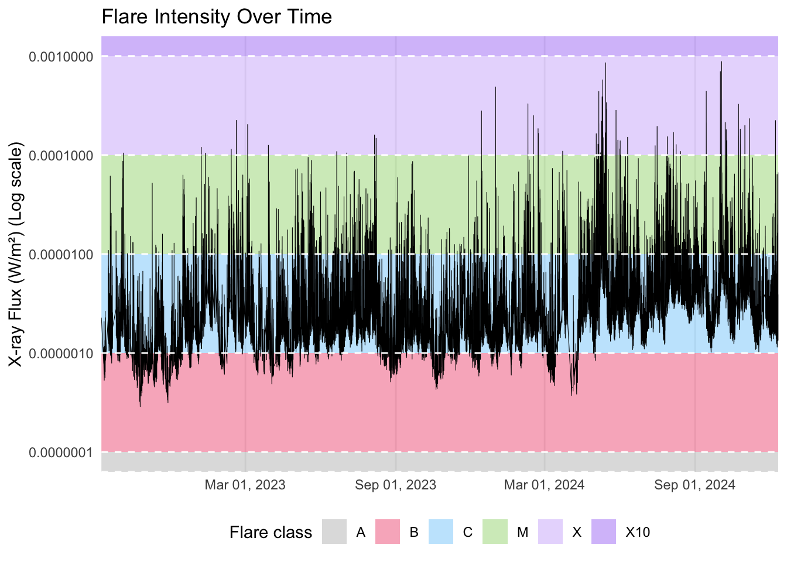
X-ray Flux is the energy output of the flare, and can be considered as the intensity of the flare. It is used to classify the flare in the forementiond categories (A,B,C,M,X). The graph represents solar flares classified by energy flux, with each band corresponding to a different flare class. The flux values are plotted on a logarithmic scale, allowing for better visualization of variations across multiple orders of magnitude. Although the data spans only two years, we can observe an upward trend in flare intensity, along with a noticeable spike in X-class flare events, indicating periods of heightened solar activity.
flare_data <- flare_data %>%
mutate(
year_month = format(Date, "%Y-%m") # This creates a 'Year-Month' column
)
# Count the number of flares per class for each month
flare_class_counts_class <- flare_data %>%
filter(!is.na(flare_category)) %>%
group_by(year_month, flare_category) %>%
tally(name = "count") %>%
ungroup()
#mutate year_month to date
flare_class_counts_class <- flare_class_counts_class %>%
mutate(year_month = as.Date(paste0(year_month, "-01")))
ggplot(flare_class_counts_class, aes(x = year_month, y = count, fill = flare_category)) +
geom_bar(stat = "identity", position = "stack") +
scale_fill_manual(values = flare_colors) +
labs(
title = "Monthly Count of Flare Classes",
x = "Month",
y = "Flare Count",
fill = "Flare Class"
) +
theme_minimal() +
scale_x_date(date_labels = "%b %Y",
date_breaks = "1 month",
expand = expansion(mult = c(0.01, 0.01))
)+
scale_y_continuous(expand = c(0, 0)) +
theme(axis.text.x = element_text(angle = 45, hjust = 1),
panel.grid.major.x = element_blank(),
panel.grid.minor.x = element_blank(),
axis.title.x = element_blank())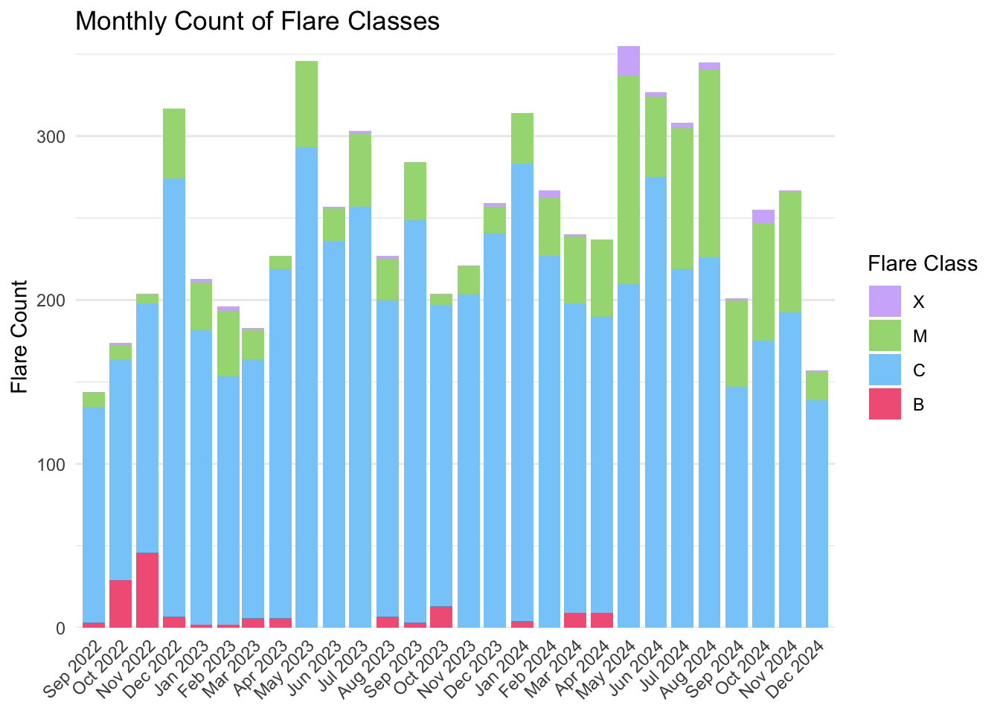
In this graph, which depicts the monthly count of solar flares, we can clearly observe that C-class flares constitute the majority of flare occurrences. Additionally, as seen in the previous graph, there is a notable increase in the frequency of stronger flares and complete dissapearance of B-class flares toward the end of the timeline, particularly during the summer months of 2024, . This period not only exhibits a rise in flare intensity but also a significant overall increase in flare activity.
flare_data_class <- flare_data %>%
drop_na(flare_category)
ggplot(flare_data_class, aes(x = flare_category, y = xrsb_flux, fill = flare_category)) +
geom_violin(alpha = 0.5) +
geom_boxplot(width = 0.1, outlier.shape = NA) +
scale_y_log10(labels = label_number(accuracy = 0.000001)) +
labs(title = "X-ray Flux Distribution by Flare Class",
x = "Flare Class",
y = "X-ray Flux (W/m²)(Log Scale)") +
scale_fill_manual(values = flare_colors) +
theme_minimal() +
theme(legend.position = "none")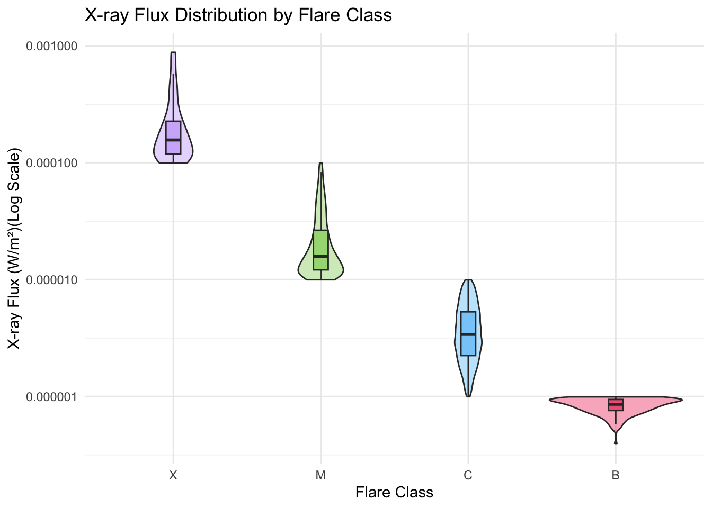
The distribution of X-ray flux values reveals distinct patterns across flare classes, highlighting the rarity of extreme high enegy events. B-class flares are more likely to be of a higher flux, indicating that weaker flares are less frequent. C-class flares exhibit a stable distribution, suggesting a more even spread of intensities. M and X-class flares follow a “drop-like” shape, starting broader at lower flux levels and narrowing at the top, emphasizing that while strong flares can vary in intensity, the most extreme events remain rare. This pattern underscores the relative stability of moderate flares and the exceptional nature of high-energy solar activity.
flare_data_clean <- flare_data %>%
filter(integrated_flux > 0)
# Log-log histogram
ggplot(flare_data_clean, aes(x = integrated_flux)) +
geom_histogram(bins = 50, fill = "#d0b6fa", color = "white") +
scale_x_log10(labels = label_number(accuracy = 0.000001)) +
labs(title = "Flare Energy Distribution Histogram",
x = "Integrated Flux (J/m²)(Log Scale)",
y = "Frequency") +
theme_minimal()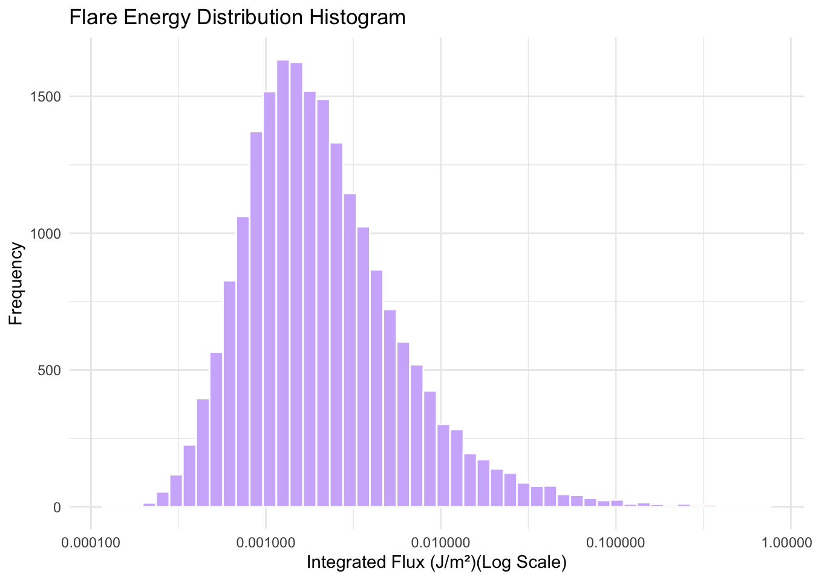
The integrated flux measures the total X-ray energy released by a solar flare over its entire duration, rather than just its peak intensity like the X-ray flux does. In this log-log histogram, the x-axis represents integrated flux values on a logarithmic scale (allowing for better visualization of variations across multiple orders of magnitude), while the y-axis shows how often these values occur. The distribution shows a peaked shape that leans towards the left, meaning very small and large flares occur less frequently, while mid-sized flares are the most common, causing the peak in the histogram. This indicates that solar flares do not have a typical size; instead, they follow a continuous range where most events are medium, but rare, extremely powerful flares can still occur. This is in alignment with the findings of the plots above that show a high number of C-class flares which can be considered of medium energy.
Flares Duration
Pivoting the dataset
To accurately determine the duration of each solar flare, the dataset must be restructured. Each flare typically has three recorded entries, corresponding to its start, peak, and end times. These entries include flux measurements and timestamps at each stage. Additionally, the flare class is assigned based on the peak flux value, meaning the classification is only explicitly recorded at the peak phase. Therefore, to analyze flare durations effectively, the data needs to be pivoted and organized by flare ID, aligning the start and end times for each event.
# Pivot the dataset to create columns for start, peak, and end times
flare_times <- flare_data %>%
select(flare_id, Date, status) %>%
group_by(flare_id, status) %>%
summarise(Date = first(Date), .groups = "drop") %>%
pivot_wider(names_from = status, values_from = Date) %>%
rename(start_time = EVENT_START, peak_time = EVENT_PEAK, end_time = EVENT_END)%>%
left_join(
flare_data %>%
filter(status == "EVENT_PEAK") %>%
select(flare_id, flare_class, flare_category, xrsb_flux) %>%
distinct(),
by = "flare_id"
)
# Convert to POSIXct time format
flare_times <- flare_times %>%
mutate(
start_time = as.POSIXct(start_time, format="%Y-%m-%d %H:%M:%S", tz = "UTC"),
peak_time = as.POSIXct(peak_time, format="%Y-%m-%d %H:%M:%S", tz = "UTC"),
end_time = as.POSIXct(end_time, format="%Y-%m-%d %H:%M:%S", tz = "UTC"),
date = as.POSIXct(start_time, format = "%Y-%m-%d", tz = "UTC" )
)
# Calculate duration in minutes
flare_times <- flare_times %>%
mutate(Duration = as.numeric(difftime(end_time, start_time, units = "mins")))
flare_times_clean <- flare_times %>%
filter(!is.na(flare_category))%>%
filter(!is.na(Duration))# Calculate the maximum duration for each day and class
max_flare_duration <- flare_times_clean %>%
group_by(date, flare_category) %>%
summarise(max_duration = max(Duration, na.rm = TRUE),.groups = "drop")
# Create the area plot for each class separately
ggplot(max_flare_duration, aes(x = date, y = max_duration, fill = flare_category)) +
geom_area() +
scale_fill_manual(values = flare_colors) +
labs(
title = "Solar Flare Duration by Class Over Time",
x = "Date",
y = "Flare Duration (Minutes)",
fill = "Flare class"
) +
theme_minimal() +
facet_wrap(~flare_category) +
theme(
axis.text.x = element_text(angle = 45, hjust = 1),
plot.title = element_text(size = 16),
panel.grid.minor.x = element_blank(),
strip.text = element_text(size = 12, face = "bold"),
legend.position = "none",
axis.title.x = element_blank()
) +
scale_y_continuous(expand = expansion(mult = c(0, 0))) +
scale_x_datetime(date_labels = "%b %Y", date_breaks = "6 month", expand = c(0, 0))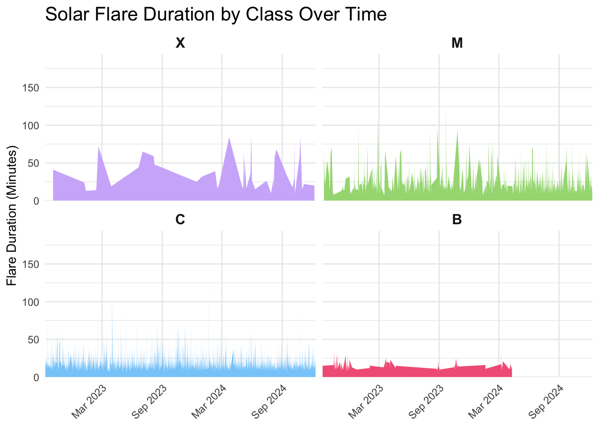
In the graph above, we can observe the general trend that higher intensity flare classes tend to have longer durations. However, Class M consistently exhibits high durations, often surpassing Class X in several instances. Additionally, while Class C typically shows shorter durations compared to both Class M and Class X, there are notable spikes in duration that stand out in the graph. These irregular spikes in Class C highlight occasional events with unusually long flare durations despite being a lower intensity class.
ggplot(flare_times_clean, aes(x = flare_category, y = Duration, fill = flare_category)) +
geom_violin(alpha = 0.5) +
geom_boxplot(width = 0.2, outlier.shape = NA, alpha = 0.7) +
scale_y_log10() +
scale_fill_manual(values = flare_colors) +
labs(title = "Flare Duration Distribution by Class",
x = "Flare Class",
y = "Duration (minutes)") +
theme_minimal() +
theme(legend.position = "none")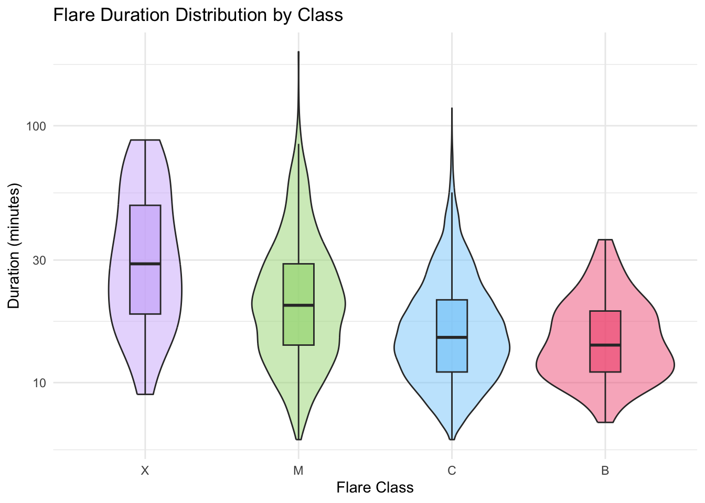
The flare duration distribution by class further reinforces the observation that lower energy classes generally have shorter durations. However, both Class M and Class C exhibit some notable outliers, with a few events showing exceptionally high durations.
longest_flares <- flare_times %>%
arrange(desc(Duration)) %>%
slice_head(n = 10)
longest_flares <- longest_flares %>%
mutate(start_time = format(start_time, "%b %d, %Y"))
ggplot(longest_flares, aes(x = Duration, y = reorder(start_time, Duration), fill = flare_category)) +
geom_col(width = 0.6) + # Adjust bar width for cleaner look
scale_fill_manual(values = flare_colors) +
labs(title = "Top 10 Longest Solar Flares",
x = "Duration (Minutes)",
y = "Flare Start Time",
fill = "Flare Class") +
theme_minimal() + # Adjust base font size for readability
theme(
axis.title.y = element_blank(),
legend.position = "right",
panel.grid.major.y = element_blank(),
axis.text.y = element_text(margin = margin(r = -15))
) +
coord_cartesian(xlim = c(0, max(longest_flares$Duration))) 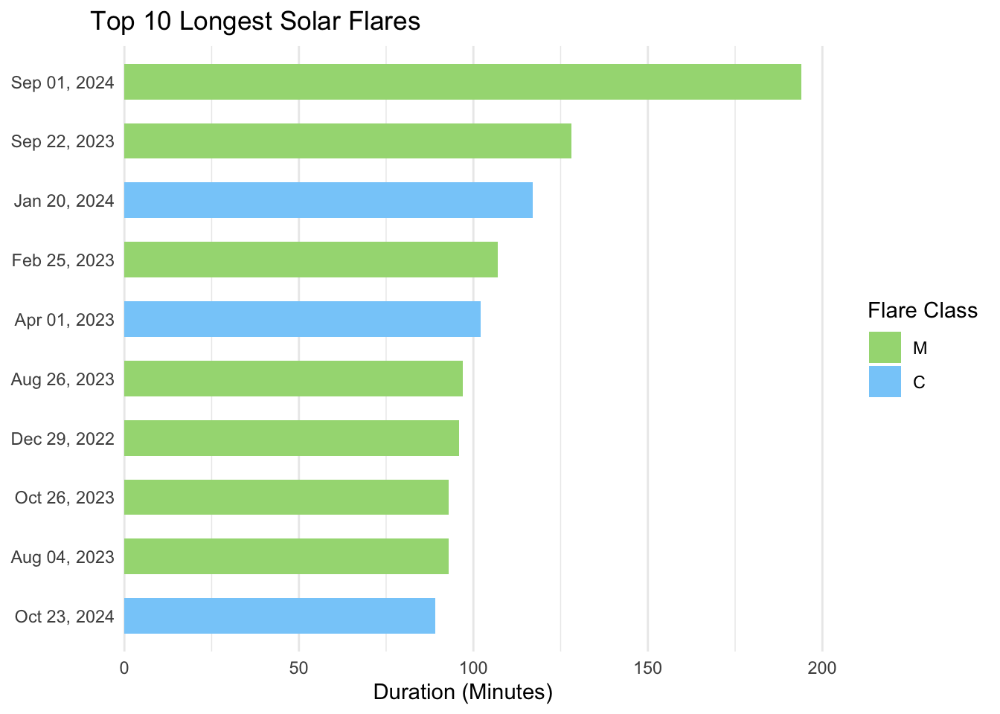
The exceptional outliers are highlighted in this graph, where we can clearly see that the top 10 longest duration flares are all of Class M and C. Remarkably, the first flare even reaches nearly 200 minutes! This highlights the rare but significant instances where lower intensity flares can have durations far exceeding the typical range for their class.
Flares location
ggplot(flare_loc_data, aes(x = flloc_car_lon, y = flloc_car_lat)) +
stat_density_2d(aes(fill = after_stat(density)), geom = "raster", contour = FALSE) +
scale_fill_viridis_c(option="A",name = "Relative Flare Density") +
labs(title = "Solar Flares Location Density",
x = "Solar Longitude (°)",
y = "Solar Latitude (°)")+
theme_minimal() +
scale_y_continuous(expand = c(0, 0)) +
scale_x_continuous(expand = c(0, 0)) +
theme(
legend.position = "none"
) 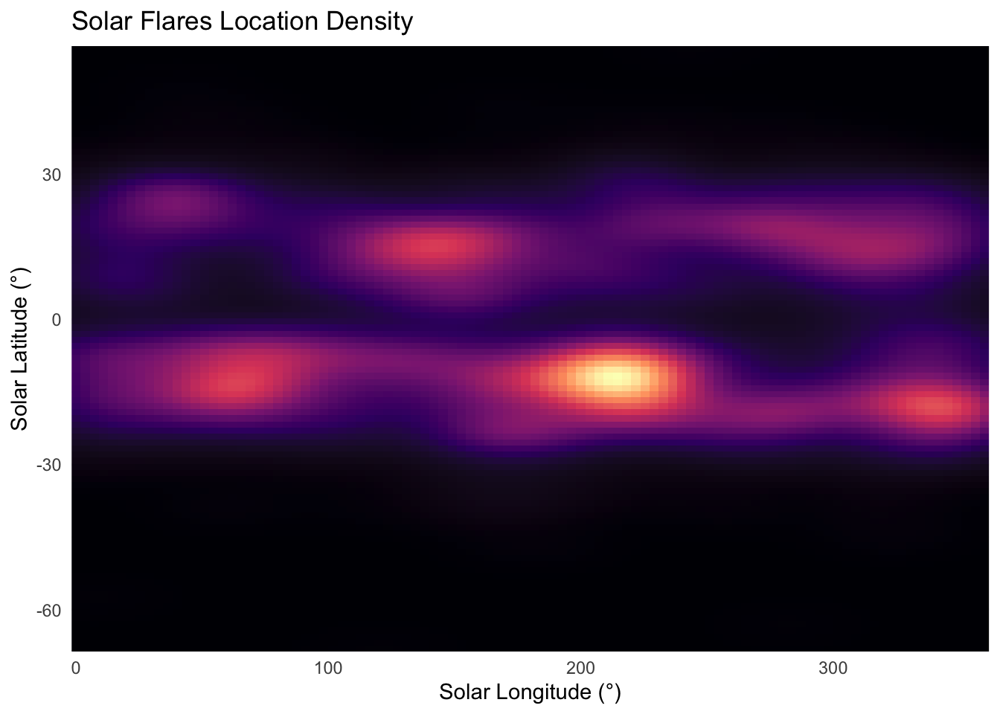
The graph illustrates the spatial distribution of solar flares, highlighting “hot spots” where flares frequently occur on the Sun. Notably, the majority of flares are concentrated within two distinct latitude bands around ±20°, while very few are observed near the solar equator or at extreme latitudes. A particularly prominent hotspot emerges around latitude -20° and longitude 200°, suggesting a region of heightened solar activity. This distribution aligns with known solar dynamics, where active regions tend to form at mid-latitudes due to the Sun’s magnetic cycle.
flare_all <- flare_loc_data %>%
select(-Date)%>%
left_join(flare_data_class, by = "flare_id")
flare_all <- flare_all%>%
drop_na(flare_category)# Create a new column that scales the size based on flare class and flare level
flare_all$flare_size <- case_when(
flare_all$flare_category == "A" ~ flare_all$flare_level * 1,
flare_all$flare_category == "B" ~ flare_all$flare_level * 1,
flare_all$flare_category == "C" ~ flare_all$flare_level * 1,
flare_all$flare_category == "M" ~ flare_all$flare_level * 10,
flare_all$flare_category == "X" ~ flare_all$flare_level * 100,
TRUE ~ flare_all$flare_level
)
ggplot(flare_all, aes(x = flloc_car_lon, y = flloc_car_lat, fill = flare_category, size = flare_size)) +
geom_point(alpha = 0.6, color = "black", shape = 21, stroke = 0.3) +
scale_fill_manual(values = flare_colors) +
scale_size_continuous(range = c(0.1, 20)) +
labs(title = "Solar Flare Locations by Class",
x = "Solar Longitude (°)",
y = "Solar Latitude (°)",
fill = "Flare Class",
size = " Flare Intensity") +
guides(
fill = guide_legend(title = "Flare Class", override.aes = list(size = 7)),
size = guide_legend(title = "Relative Intensity", override.aes = list(size = c(2, 4, 6, 8)))
) +
theme_minimal() +
scale_y_continuous(expand = c(0, 0)) +
scale_x_continuous(expand = c(0, 0)) +
theme(legend.position = "top",
legend.box = "horizontal")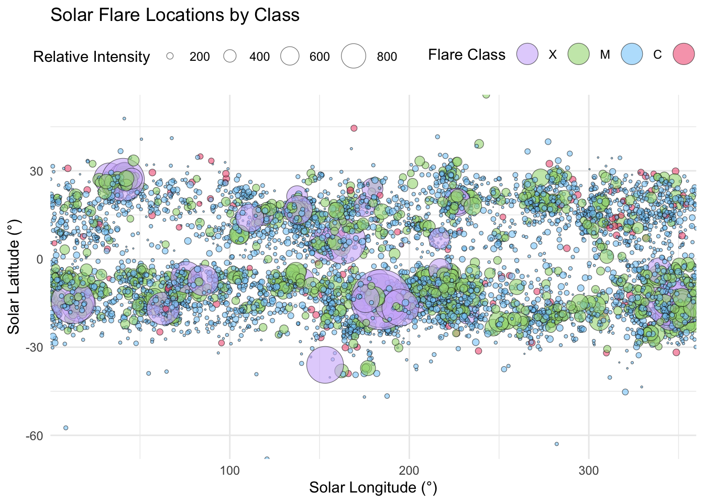
In this plot, we visualize the location of all solar flares. The size of each dot correlates with the magnitude of the flare, it was modified to enhance the visual impact of the different solar flares energy output, but its still providing insight into its intensity. As seen in the distribution graph above, distinct hotspots for solar flares emerge. Notably, the X-class flares are confined to these hotspots, while the other flare classes (such as M,C and B) are more evenly distributed across the two high solar activity bands, which are typically found around latitudes 20° north and south.
Sunspots
# Group by Year and Month, and calculate the average sunspots for each month
monthly_sunspots_avg <- sunspots %>%
group_by(Year, Month) %>%
summarise(average_sunspots = mean(Tot_sunspots), .groups = "drop") %>%
ungroup()
monthly_sunspots_avg$year_month <-
as.yearmon(paste(monthly_sunspots_avg$Year, monthly_sunspots_avg$Month, sep = "-"))
monthly_sunspots_avg$year_month <- format(monthly_sunspots_avg$year_month, "%Y-%m")
monthly_sunspots_avg$Date <- as.Date(paste(monthly_sunspots_avg$Year, monthly_sunspots_avg$Month, "01", sep = "-"))#solar cycles dates gathered from scientific literature
specific_dates <- as.Date(c("1976-03-01", "1986-09-01", "1996-05-01", "2008-12-01", "2019-12-01"))
year_labels <- c("1976", "1986", "1996", "2008", "2019")
ggplot(monthly_sunspots_avg, aes(x = Date, y = average_sunspots)) +
geom_vline(xintercept = specific_dates, linetype = "dashed", color = "gray") +
geom_line(color = "black", linewidth = 0.4) +
geom_smooth(method = "gam", color = "#ad80f6", fill = "#ad80f6", alpha = 0.2) +
labs(
title = "Average Monthly Sunspot Count and Solar Cycles",
x = "Year",
y = "Average Sunspots"
) +
theme_minimal() +
scale_x_date(breaks = specific_dates, labels = year_labels, expand = c(0, 0)) +
theme(
axis.text.x = element_text(size = 12),
axis.title.x = element_blank(),
panel.grid.minor = element_blank(),
panel.grid.major.x = element_blank(),
panel.grid.minor.x = element_blank()
)`geom_smooth()` using formula = 'y ~ s(x, bs = "cs")'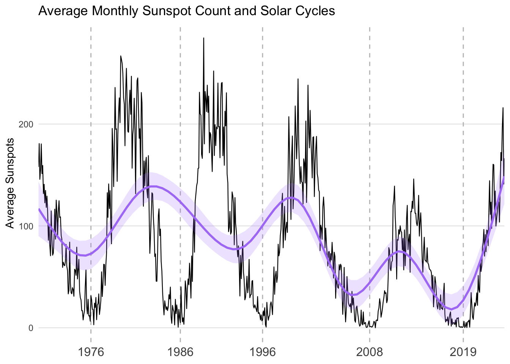
In this graph, we can clearly observe the characteristic rise and fall of sunspot counts, marking the different phases of the solar cycle. The solar cycles specific dates were added manually after reaserching the scientific literature on the oscillating nature of the sunspots counts. The current data suggests that we are near the peak of an ongoing solar cycle, indicating an active period of solar activity. The Sun’s solar cycle is an approximately 11-year period during which sunspot activity fluctuates, increasing to a peak before gradually declining. These cycles have been systematically recorded since 1755 and are sequentially numbered. The cycle is driven by the Sun’s magnetic flux, which rises and falls over time, influencing the formation of sunspots. During solar minimum, sunspots are rare, small, and short-lived, leading to minimal space weather effects. Conversely, during solar maximum, sunspot activity surges, often accompanied by heightened solar flares and geomagnetic disturbances.
flare_class_counts <- flare_data %>%
filter(!is.na(flare_category)) %>%
group_by(year_month) %>%
tally(name = "count") %>%
ungroup()
monthly_sunspots_avg <- monthly_sunspots_avg %>%
select(-Year, -Month)spot_flare_data <- merge(flare_class_counts, monthly_sunspots_avg, by = "year_month", all.x = TRUE)
colnames(spot_flare_data) <- c("year_month", "flare_count", "sunspots_avg","date")
spot_flare_data <- spot_flare_data %>%
filter(!is.na(year_month) & !is.na(sunspots_avg))%>%
filter(is.finite(sunspots_avg))%>%
arrange(year_month)ggplot(spot_flare_data, aes(x = date)) +
geom_line(aes(y = flare_count, color = "Flare Count"), linewidth = 1) +
geom_line(aes(y = sunspots_avg, color = "Sunspot Count") , linewidth = 1) +
geom_smooth(aes(y = flare_count), color = "black",method = "loess", se = FALSE) +
geom_smooth(aes(y = sunspots_avg), color = "black",method = "loess", se = FALSE) +
labs(title = "Flare vs. Sunspot Count",
x = "Date",
y = "Count",
color = "Legend") +
theme_minimal() +
scale_color_manual(
values = c(
"Flare Count" = "#87CEFA", # Red for flare count
"Sunspot Count" = "#ad80f6" # Black for sunspot count
)
) +
scale_x_date(date_labels = "%b %Y", date_breaks = "6 month", expand = c(0, 0)) +
theme(
axis.title.x = element_blank()
)`geom_smooth()` using formula = 'y ~ x'
`geom_smooth()` using formula = 'y ~ x'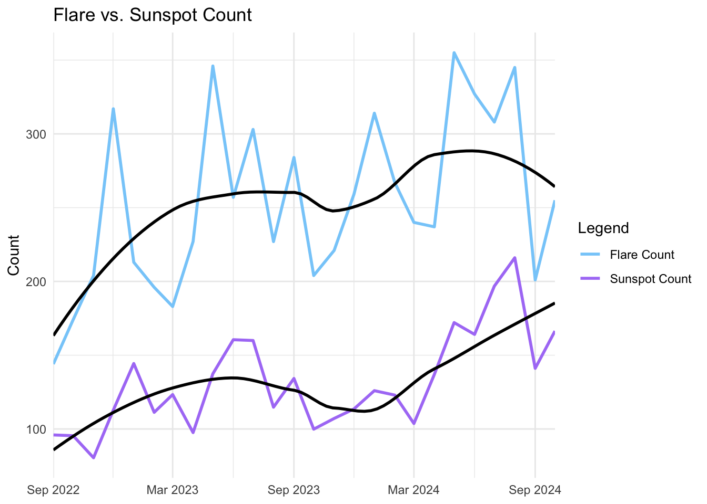
In the “Flare vs. Sunspot Count” visualization, we see a snapshot of the overall picture, considering that we only have flare data for the last two years. Nevertheless, we can observe a correlation between the rise and fall of sunspot count and flare count trends. The graph showcases two trend lines using the LOESS method, and they seem to rise and fall at approximately the same rate, suggesting a correlation between sunspot activity and flare occurrence. If we had a more extensive dataset of flare occurrences, this relationship could become even more evident.
Conclusion
In this project, we analyzed solar flare data from late 2022 to December 2024, alongside long-term sunspot data dating back to 1970, to uncover patterns in flare intensity, frequency, duration, and location, as well as their relationship to the solar cycle.
Our visualization of average monthly sunspot counts over decades clearly highlighted the well-documented 11-year solar cycle, where sunspot numbers rise and fall in a periodic fashion. When comparing this to the recent solar flare data, we observed a similar increasing trend in flare frequency and intensity, suggesting a connection to the ongoing solar cycle. However, due to the limited time span of our flare dataset, we are only capturing a portion of this cycle. While the overall increase in both flare count and the occurrence of stronger flares (M and X-class) aligns with expectations, a more complete picture would require historical flare data from earlier in the cycle.
The distribution of flare classes and energy confirmed that C-class flares are the most common, followed by M-class, X-class, and then B-class. X-ray flux distribution across these classes highlighted the significant differences in energy levels, with higher-class flares exhibiting much stronger flux values. The duration analysis revealed an interesting pattern: while higher-intensity flares generally last longer, some M-class flares had the longest durations, even exceeding X-class flares. This was further emphasized in the top 10 longest flares, where extreme-duration events were not necessarily the most intense but still had significant energy output.
Geospatially, our analysis of flare locations and heatmaps confirmed that solar flares predominantly occur in two distinct latitude bands corresponding to the Sun’s active regions. More intense X-class flares were concentrated in specific hotspots within these regions, whereas lower-energy (B and C-class) flares were more evenly distributed. This supports the established understanding that extreme solar activity tends to originate from particularly active sunspot regions.
Through this project, I started with a basic level of knowledge about space weather and was able to uncover trends and relationships that I had not previously known about, such as solar cycles. This discovery motivated me to explore the scientific literature further to validate my findings and, consequently, deepen my understanding of the topic. Data visualization has proven to be an essential and powerful tool in making complex phenomena more accessible and interpretable. By applying these techniques, I was able to explore key relationships in solar physics, providing insights into the behavior of solar flares over time, across different intensity classes, and in relation to the Sun’s magnetic cycle.
Literature
https://svs.gsfc.nasa.gov/10109/
https://science.nasa.gov/sun/solar-storms-and-flares/#solar-flare
https://www.spaceweatherlive.com/en/help/what-are-solar-flares.html